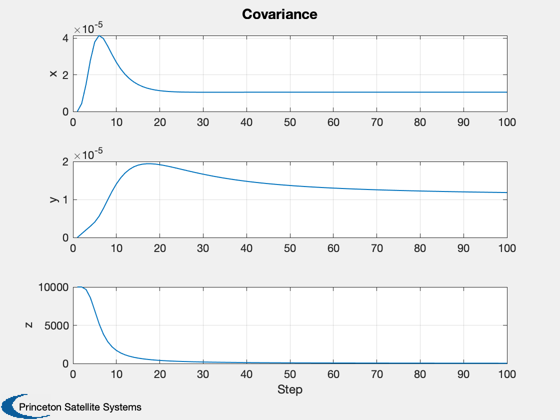
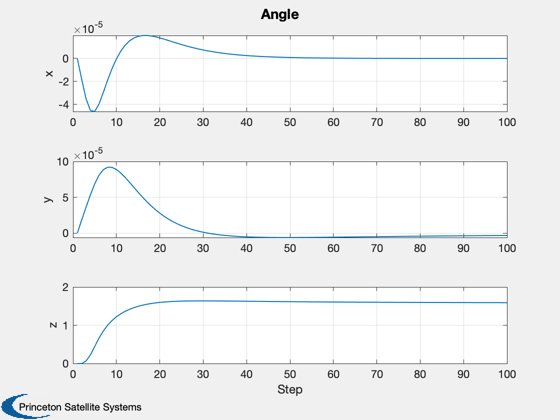
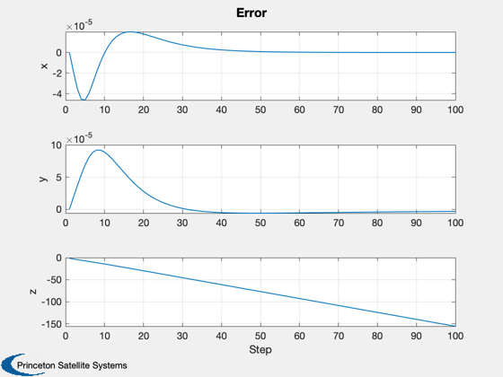

Demonstrate the yaw/roll gyrocompassing system.
------------------------------------------------------------------------
See also Plot2D, RYGCAttDet
------------------------------------------------------------------------
Contents
nSim = 100;
degToRad = (pi/180);
Truth model
dT = 0.25;
angle = [0;0;pi/2];
bGyro = [0;0;0];
s = sin( angle(3) );
c = cos( angle(3) );
wo = -7.291e-5;
angInc = dT*[s*wo;-c*wo;0];
Filter setup
x = [0;0;0];
p = diag([0 0 10000]);
Q = 1.e-6*eye(3);
r = 1.e-4*eye(2);
Preallocation of arrays
pPlot = zeros(3,nSim);
xPlot = zeros(3,nSim);
for k = 1:nSim
pPlot(:,k) = diag(p);
xPlot(:,k) = x;
[x, p] = RYGCAttDet( angInc, x, dT, bGyro, p, Q, r, angle(1:2), eye(3) );
end
Plot the results
x = 1:nSim;
Plot2D( x, pPlot, 'Step', ['x';'y';'z'], 'Covariance' );
Plot2D( x, xPlot, 'Step', ['x';'y';'z'], 'Angle' );
Plot2D( x, xPlot - angle*x,'Step', ['x';'y';'z'], 'Error' );
  